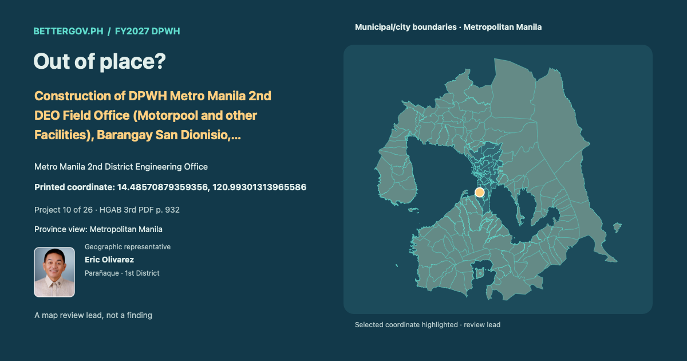

Eric OlivarezParañaque · 1st DistrictOfficial profile ↗
Out of place? · Construction of DPWH Metro Manila 2nd DEO Field Office (Motorpool and other Facilities), Barangay San Dionisio, Parañaque City, 14.48570879359356, 120.99301313965586

Geographic representative
Metro Manila 2nd District Engineering Office · Geographic representative: Eric Olivarez · Parañaque · 1st District. Printed coordinate 14.48570879359356, 120.99301313965586. Geographic coverage is not sponsorship. Proposed allocation. Coordinate signals are review leads, not findings.